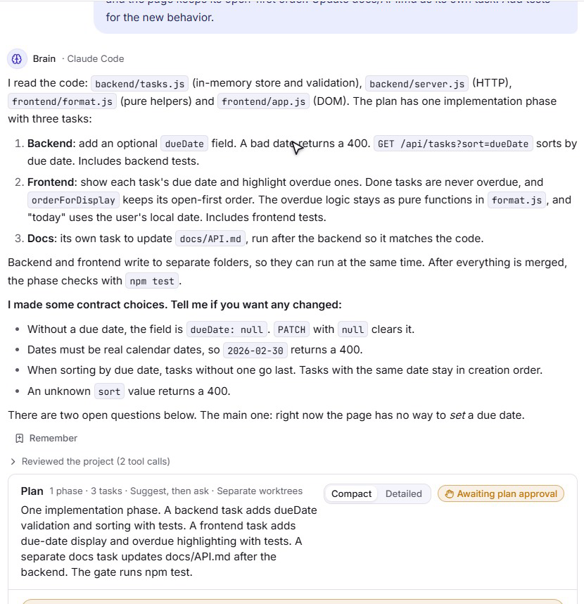
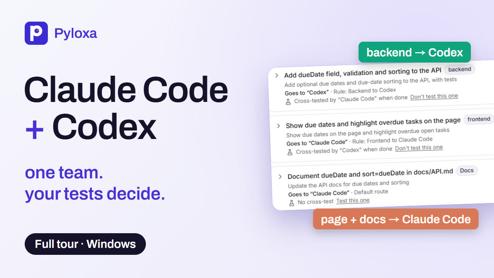

「完了」を決めるのは、
あなたのテスト。Claude Code と Codex に作業を分担させ、利用枠が尽きたら引き継ぎを提案する無料の Windows アプリ
セッションを並べて開くだけではありません。やりたいことを一度伝えると、Pyloxa が計画を立て、タスクを Claude Code と Codex に振り分け、マージの前に自分でテストを実行します。
6 分間の紹介動画を見る または、サインインして Pro プレビューを無料で試す →- Windows ネイティブ、WSL 不要
- 自分のサブスクリプションで動く
- CLI のサインインに触れない
- 画面は 9 言語に対応
これは Pyloxa のルール例です。ルールは自分で書き、各タスクには一致したルールが表示されます。
しくみ
まず、やりたいことを伝えます。

次に、プランを承認します。

最後に、成功したものをマージします。
- Mbackend/server.js
- Mbackend/tasks.js
- Abackend/test/due-date-http.test.js
- Mbackend/test/tasks.test.js
- Mdocs/API.md
- Mfrontend/app.js
- Mfrontend/format.js
- Mfrontend/index.html
- Mfrontend/style.css
- Mfrontend/test/format.test.js
実際の流れを最初から最後まで
API、Web ページ、ドキュメントからなる小さなプロジェクトで、ナレーション付きで一通り進めます。Codex がバックエンドを、Claude Code がページとドキュメントを担当し、Pyloxa が自分でテストを実行し、別ベンダーのエージェントがクロステストします。途中でワークフロー、共有メモリ、スキルも紹介します。

ひとつのワークフロー、5 つの段階
アプリの「ワークフロー」ページでは、流れ全体を一度に確認できます。誰が計画するか、どんなフェーズに分けるか、どの種類のタスクを誰が担当するか、どう確認するか、どう引き渡すか。どの段階もあなたの設定です。ブレインはプランを提案するだけで、設定は変更できません。
計画：誰をブレインにし、どこまで任せるか
どのプロファイルも、プロジェクトを読んでプランを書くブレインにできます。ブレインには、作業するエージェントとは別のモデルを使えます。
- プロファイルでは、CLI、モデル、推論レベル、すべてのタスクに付け加えるロールプロンプトを選びます。ひとつの CLI に複数のプロファイルを作れます（例：「Claude フロントエンド」と「Claude ドキュメント」）。
- 振り分けモードは、Pyloxa がいつ先に確認するかを決めます。どのモードでも、プッシュとデプロイが勝手に行われることはありません。
- ブレインが使えないとき、Pro ならバックアップのブレインに計画を任せられます。ブレインが自分の作業をレビューすることはありません。
フェーズ：ブレインが組み立てるか、あなたが指定する
ブレインは依頼に合わせて、仕様、コントラクト、実装、テストなどのフェーズを組み立てます。承認する前に、タスクの割り当て変更、指示の編集、ブレインへの修正依頼ができます。
- 完了したタスクはそれぞれ専用の worktree で検証し、各フェーズの終わりには、統合した結果に対してゲートをもう一度実行します。
- ゲートは、通過したら自動で次へ進めることも、あなたの承認を待つこともできます。
- 指定したフェーズで進めることもできます。最大 5 つまでで、各フェーズの担当、完了したら承認を待つかどうか、リクエストに不要なときに省略できるかどうかを、あなたが決めます。無料版でも使えます。
- プランを承認すると、プランカードの上部に進捗バーが表示され、各フェーズの状態と今どのフェーズにいるかがわかります。フェーズをクリックすると、その位置までスクロールします。
- 次のフェーズは引き継ぎパッケージを受け取ります。中身は結果、成功したチェック、注意点です。
- Agent Teams（実験的、Pro）：実行中のエージェントがチーム全体のタスクを見て進捗を報告し、情報が足りないときは止まってあなたに質問します。
- 1仕様とコントラクトCodexゲート通過
- 2実装フロントエンド Claude Code · バックエンド Codex実行中
- 3テスト完了したら承認を待つ待機中
割り当て：誰が何をするかを 1 つの表で決める
割り当て表の各行が 1 種類のタスクです。最初に任せるエージェントと、引き継ぐエージェントを選びます。空欄のセルのエージェントには、その種類のタスクは渡りません。
- ルールは上から順に照合され、最初に完全一致したものが採用されます。あるルールが別のルールを隠してしまう場合は警告します。
- 特定のプロジェクトやフェーズだけに適用するルールはルール一覧に書き、割り当て表より優先されます。
- ルールのシミュレーションはエージェントを呼び出さず、利用枠も使いません。タスクの種類を選ぶと、誰が担当するか、その理由がわかります。
- どのルールにも一致しない場合は、設定に応じて、プランのプレビューで確認するか、停止します。エージェントを適当に選ぶことはありません。
| タスクの種類 | Claude Code | Codex | Gemini CLI |
|---|---|---|---|
| フロントエンド | |||
| バックエンド | |||
| ドキュメント | |||
| テスト | |||
| 画像 |
チェック：エージェントの「完了」だけでは完了にならない
承認した検証コマンドを Pyloxa がタスク専用の worktree で実行し、成功したときだけ完了になります。失敗した場合は、エージェントが 1 回自動で修正します。
- 検証コマンド（
npm run testなど）にはあなたの承認が必要で、先に一時的な worktree で試せます。ブレインが使えるのは承認済みのコマンドだけです。 - 完了したタスクを別のエージェントに渡してテストさせられます。たとえば Codex が実装し、Claude Code がテストを書きます。テスト担当が変更できるのはテストファイルだけで、Pyloxa は結果に対してあなたのコマンドを再実行します。
- ブレインは、独自のモデルと思考レベルで完了した作業をレビューできます。判定は AI レビューと表示され、あなたのレビューが必要なタスクは引き続きあなたを待ちます。
作業中
検証済み
ログイン中のメンバーを返す GET /api/profile エンドポイントを、テスト付きで追加してください。
GET /api/profile を追加しました。メンバーの名前とメールアドレスを返し、テストを 2 件追加しています。npm run test は成功しました。
統合済み
引き渡し：マージとプッシュはあなたが決める
各タスクは専用の git worktree で完了し、変更が許可された書き込み範囲内かを確認してから統合ブランチにマージされます。あなたのブランチへのマージ、プッシュ、PR の作成は、すべてあなたの操作を待ちます。
- PR の説明に検証レポートを追記できます。フェーズごとに 1 つの表で、誰が作業したか、誰がクロステストしたか、Pyloxa がどのコマンドを実行したか、各成果がどう受け入れられたかを示します。エージェントが「完了」と言っただけでは合格になりません。
- 最後の 1 行は既定では追加されません。オンにすると、すべての成果が Pyloxa の実行したコマンドに通過し、すべてのゲートも通過した場合にだけ「Verified with Pyloxa」と書きます。
- PR を作らなくても確認できます。プランが完了したら、プランカード下部の「検証レポート」をクリックすると、Markdown をコピーできます。
- .github、.claude、CLAUDE.md のように、エージェントや自動化の動きを左右するファイルを変更したタスクは自動で受け入れられず、マージ前のダイアログでもそれらのファイルが改めて表示されます。
- Pyloxa が作業ディレクトリに対して stash、reset、checkout を実行することはありません。
Pyloxa の検証記録
まとめ：✅ 2 件が Pyloxa 自身の実行したコマンドに通過 · ⚠️ 1 件はコマンドで検証されておらず、人か AI が確認
| 成果 | 担当 | クロステスト | 結果 |
|---|---|---|---|
| ✅ プロフィール API | Codex | Claude Code：合格、保護されたテストファイルを 1 件追加 | すべてのチェックに合格したため、自動で受け入れました |
| ✅ プロフィールページ | Claude Code | — | 人の確認後に受け入れ |
| ⚠️ README を更新 | Claude Code | — | 人の確認後に受け入れ |
5 つのテンプレートから始める
適用する前に、変わる設定がすべて一覧で表示されます。「直前のテンプレートを元に戻す」で適用前に戻せます。テンプレートに含まれる Pro の設定は、無料版では適用されません。
- バランス型デフォルト
フロントエンドは Claude Code、バックエンドは Codex に任せ、互いのフォールバックにします。提案してから確認。
- クイック修正
設定どおりにのみ実行し、worktree を 1 つ共有して、すべてブレインのプロファイルに任せます。
- 厳格レビューPro の設定を含む
ブレインがすべてのタスクをレビューし、フロントエンドとバックエンドのタスクはクロステストします。
- 利用枠を分散Pro の設定を含む
各種類のタスクを Claude Code と Codex に分散し、利用枠が尽きたら自動でフォールバックします。
- 仕様を先に
先に仕様を書いて承認を待ち、そのあと実装とテストを行います。リクエストにテストが不要なら省略できます。
自分のワークフローを保存し、プロジェクトごとに使い分ける Pro
設定ができたら「マイワークフローとして保存」をクリックし、プロジェクトごとにどれを使うかを選びます。たとえば API のプロジェクトは仕様を先に、小さなツールはそのまま修正。進め方を一言で伝えて、ブレインにワークフローを作ってもらうこともできます。
- ブレインは案を作るだけです。フェーズ、割り当て、チェック方法をまず変更点として表示し、グローバルに適用するか、マイワークフローとして保存するか、説明を編集して作り直すかを、あなたが選びます。
- ブレインがエージェントを勝手に作ることはできません。存在しないエージェントや無効になっているエージェントは取り除かれ、対応できない要望は説明に書かれます。
- グローバルに適用する前に現在の設定を記録するので、元に戻せます。ワークフローを指定していないプロジェクトはグローバル設定に従います。
- 保存するたびにバージョンが残り、ワークフローごとに最大 10 個まで保存されます。任意の 2 つを比較したり、どれかに戻したりでき、戻す前の内容もバージョンとして残ります。
- マイワークフローは振り分けパックに入れて共有でき、エクスポートした設定と一緒に新しいパソコンにも移せます。
- フェーズ
ブレインに任せる→ 仕様（完了したら承認を待つ）→ 実装 → テスト- バックエンド
Claude Code→ Codex- ブレインレビュー
レビューしない→ すべてのタスク
利用枠が尽きたとき
タスクの途中で Codex が利用上限に達すると、Pyloxa は Codex への作業の送信を止め、あなたのルールにあるフォールバックを提案します。確認すると、Codex がすでに変更したファイルから Claude Code が作業を続けます。
タイトルバーには、Claude Code のサブスクリプションの残りが表示されます。70% 使うと黄色、90% に達するか制限中になると赤になります。Codex などほかの接続では今日使ったトークン数が表示され、制限中になるとその旨が表示されます。
どのエージェントも同じコンテキストを読む
プロジェクトのルール、慣習、落とし穴を一度書いておけば、Claude Code、Codex、Gemini CLI のすべてが読み込みます。スキルも同じです。CLI ごとにコピーを置かず、1 か所で管理できます。
- 記憶する無料ブレインの返答やタスクのセッションで「記憶する」を押します。CLAUDE.md、AGENTS.md など各 CLI のメモリファイルから項目を選んでインポートすることもできます。
- エージェントが提案し、あなたが承認無料エージェントは作業中にメモリを検索し、新しいメモリを提案できます。あなたが受け入れるまで、提案はどのエージェントにも見えません。プロジェクトごとに、エージェントが提案した事実と落とし穴を自動で受け入れるようにもできます（初期設定はオフ）。
- すべての CLI に同期無料プロジェクトのルールを AGENTS.md の Pyloxa ブロックに書き込むと、ターミナルで CLI を直接使うときにも読み込まれます。先に差分を確認でき、コミットは自動で行いません。
- スキルの一覧無料各 CLI にどのスキルがあるか、名前は同じでも内容が異なるものはどれかを確認できます。
- スキルライブラリと振り分けパックProひとつのスキルライブラリをすべての CLI に同期し、プロジェクトやプロファイルごとに割り当て、ルール、コマンドの提案、慣例、マイワークフローと一緒に振り分けパックとして共有できます。
npm ではなく、必ず pnpm を使う。
ルール · このプロジェクト · ブレインの提案Windows でテストを実行するときは --runInBand を付けないとタイムアウトする。
| 名前 | Claude Code | Codex | shop プロジェクト |
|---|---|---|---|
| api-contract | 同期済み | 同期済み | 使用中 |
| react-conventions | 同期済み | 不一致 | 使用中 |
| release-notes | なし | 同期済み | 未使用 |
| db-migration | 同期済み | 同期済み | 未使用 |
| test-writer | 同期済み | 同期済み | 使用中 |
画面はイメージです。メモリとスキルの一覧は無料版で使えます。スキルライブラリ、割り当て、振り分けパックは Pro の機能です。
エージェントを増やすだけではなく
複数のエージェントを並べて動かせるツールはたくさんあります。Pyloxa が扱うのは、エージェントどうしの間で起きることです。誰がどの部分を担当するか、完了をどう確かめるか、行き詰まったときに誰が引き継ぐか。
同じ依頼を 3 通りの方法で比べます。自分で CLI を切り替える方法、ターミナルマルチプレクサで複数のエージェントのターミナルを並べる方法、そして Pyloxa に任せる方法です。
| 自分で CLI を切り替える | ターミナルマルチプレクサ | Pyloxa の場合 | |
|---|---|---|---|
| 作業の分担 | どの部分にどのツールが合うかを自分で判断し、依頼を貼り付け直します。 | 各ターミナルのエージェントが何をするかは自分で決めます。ツールによっては、エージェントが補助のエージェントを起動できるものもあります。 | ブレインが依頼をフェーズとタスクに分け、あなたのルールに従って振り分けます。どのルールに一致したかも表示します。 |
| 引き継ぎ | あるエージェントが終わったら、API の形式やファイルパスを次のエージェントに貼り付けます。 | エージェントどうしでメッセージを送り合えますが、何を引き継ぐかはエージェント次第です。 | 次のフェーズは引き継ぎパッケージを受け取ります。中身は結果、成功したチェック、注意点です。 |
| 完了の基準 | エージェントが「完了」と言い、あなたがテストを実行して確かめます。 | どのエージェントが作業中か、完了したか、あなたを待っているかは見えます。結果が正しいかどうかは、やはり自分で確認します。 | タスク専用の worktree で検証コマンドが成功したとき、タスクは完了です。失敗した場合は、エージェントが 1 回自動で修正します。別のエージェントにテストを書かせたり、ブレインにレビューさせたりもできます。ブレインの判定は AI レビューと表示されます。 |
| 利用枠が尽きたら | ツールを切り替えて、どこまで進んだかをもう一度説明します。 | そのターミナルは止まって待機します。引き継ぎの段取りは自分で行います。 | Pyloxa があなたのルールからフォールバックを提案します。確認すると、最初のエージェントが変更したファイルから作業を続けます。 |
| リポジトリ | エージェントが作業ディレクトリを直接編集します。 | ターミナルの開き方によります。たいていは作業ディレクトリです。 | 各タスクは専用の git worktree で作業し、変更が許可された書き込み範囲内かどうかを確認します。マージとプッシュはあなたが決めます。 |
| 向いている用途 | 一度にひとつの作業。 | 多くのターミナルを同時に見ること、アプリを終了してもエージェントを動かし続けること、リモートマシンでの作業。 | ひとつの依頼を複数のエージェントに分け、マージ前に結果を検証すること。 |
エージェントが勝手に動くプラットフォームではありません
エージェントを会社のように動かし、自分で仕事を割り振り、決まった時間に起きて、一日中動かし続けるプラットフォームもあります。Pyloxa は別の道を選びました。エージェントは頼まれたことだけを行い、成果はチェックを通ってからマージするかどうかをあなたが決めます。
-
Windows ネイティブ
Windows 10・11 でそのまま動きます。WSL や Docker も、サーバーやデータベースの用意も不要です。
-
テストは Pyloxa が自分で実行
エージェントの「完了しました」だけでは完了になりません。承認した検証コマンドを Pyloxa がタスクの worktree で実行し、通過したら完了です。
-
権限確認を飛ばさない
--dangerously-skip-permissionsのように権限確認をすべて飛ばすモードは使いません。書き込み範囲の外を変更した場合は、自動で受け入れません。 -
CLI のサインインに触れない
CLI の認証情報を読み取ったり、コピーしたり、送信したりせず、サブスクリプションを他人と共有することもありません。エージェントは、あなたがサインインした公式 CLI で動きます。
-
勝手に仕事を作らない
エージェントは依頼された作業だけを行い、自分で新しい仕事を作りません。利用枠を使い切ったら止まるか、あなたのルールで交代します。
-
PR に検証レポートを追記
PR を作るとき、検証レポートを追記できます。実際に実行されたコマンド、誰がクロステストしたか、各成果がどう受け入れられたかがわかります。
まずサンプルプロジェクトで試乗する
初めて使うときに、自分のプロジェクトで冒険する必要はありません。セットアップガイドの最後のステップで「試乗を始める」をクリックすると、Pyloxa が小さなショッピングカートのサンプルリポジトリを作り、エージェントに新しい機能を追加させます。中には四捨五入のバグが意図的に仕込んであります。
- プランはあらかじめ用意されたもので、ブレインを通さず、ブレインの利用枠も使いません。それでも開始はあなたの承認を待ちます。
- 1 つのエージェントが新機能を実装し、Pyloxa が自分でテストコマンドを実行します。エージェントの言い分はうのみにしません。
- 別のベンダーのエージェントが仕様どおりにテストを追加し、バグを見つけたら修正に戻します。Pro は自動でクロステストし、無料版ではあなたが「別のエージェントにテストを依頼」をクリックします。
- 結果を受け入れたら、プランカード下部の「検証レポート」をクリックし、各ステップで実際にどのチェックが行われたかを確認します。
git と Node.js が必要です。エージェントが 1 つだけのときは、付属の仕様テストで確認します。開始前に、誰が実装し誰がテストするか、見込みのターン数、トークン数、時間を表示します。試乗があなたのプロジェクトに触れることはなく、プッシュや PR の作成もしません。
src/money.js
function toCents(dollars) {
- return Math.floor(dollars * 100);
+ return Math.round(dollars * 100);
}node --test
Pyloxa が実行したコマンド：12 件通過
クロステスト：保護されたテストファイルを 1 件追加
自分の言語で使う。
画面の表示言語とエージェントの返答の言語は、それぞれ 9 言語から別々に選べます。
自分のショートカットを使う。
設定でキーボードショートカットを自由に変更でき、アプリのメニューにも反映されます。すでに使っているショートカットと重なる場合は、先に確認します。
よく入力する指示を覚えておく。
メッセージ入力欄で「/」を入力すると、保存したプロンプトテンプレートを選べます。毎回変わる部分は波かっこで示します。無料版は 5 個まで、Pro は無制限です。
自分好みのレイアウトにする。
サイドバーは幅を広げたりアイコン表示に折りたたんだりできます。よく使う設定ページをピン留めし、プロジェクトごとに色を付けることもできます。
自分の設定を新しいパソコンに持っていく。
「設定 → バックアップと移行」で、エージェントプロファイル、振り分けルール、マイワークフロー、プロンプトテンプレート、共有メモリ、スキルライブラリ、画面の設定を 1 つのファイルにエクスポートします。API キーとサインイン情報は含まれません。インポート前に項目ごとにプレビューでき、このパソコンの設定も先に自動でバックアップされます。
無料版はエージェントの作業を見守るもの。Pro はあなたがいなくても作業を続けます。
無料版でも、計画、振り分け、検証、マージまでの流れをすべて、見守りながら進められます。Pro はあなたがいないときも作業を続けます。夜や会議中に空いている AI サブスクリプションの利用枠に作業を割り当て、あなたのルールどおりに仕上げてテストまで実行するので、戻ったらレビューするだけです。
| プランの比較 | 無料版$0 アカウント不要 | Pro 早期割引：年額 US$49US$79 / 年。解約後も、支払い期間中にリリースされたバージョンでは Pro がそのまま使えますPro プレビュー：サインインすれば 2026 年 12 月 31 日まで無料で使えます。12 月 1 日から購入できます。 |
|---|---|---|
| 同時に進めるプロジェクト | 一度に作業するプロジェクトはひとつ。いつでも切り替え可能 | 複数のプロジェクトを同時に進行。あなたの対応を待つものはすべて、タスクセンターの受信トレイにまとまります |
| 振り分け | 提案してから確認、または設定どおりにのみ実行 | 許可した範囲で自動：許可したエージェント、モデル、回数の範囲で選択と再試行を行い、上限に達すると一時停止 |
| ワークフロー | ワークフローページ、割り当て表、5 つの組み込みテンプレート、カスタムフェーズ | マイワークフロー：複数のワークフローを保存してプロジェクトごとに使い分け（バージョンの比較と復元つき）、一言でワークフローを作成 |
| 利用枠が尽きたとき | フォールバックを提案し、引き継ぎは毎回あなたが確認 | 自動フォールバックチェーン：ルールにあるフォールバックへ順番に引き継ぎ、毎回の確認は不要。引き継ぎはタスクごとに最大 2 回 |
| 検証とテスト | 検証コマンド、フェーズゲート、ブレインレビュー、必要に応じた別エージェントによるクロステスト | 自動クロステスト：タスクの種類やブレインの判断で実行し、失敗したテストは修正に戻す |
| 利用枠のスケジューリング | 利用枠を待つタスクはリセット後に再開（リセット時刻がわかっていれば自動で再開） | プロジェクトの優先度、接続ごとの利用枠、指定時刻や次のリセット時に開始するプランの予約 |
| 使用量とレポート | 実行ごとの使用量 | プロジェクト横断の利用状況ダッシュボード：プロジェクトごとのエージェント作業時間、トークン、CLI が報告する金額を Markdown または CSV で書き出し |
| 通知 | Windows のデスクトップ通知 | 自分の Telegram bot、Discord、任意の webhook に送信 |
| Skills | 各 CLI が参照できるスキルの一覧 | ひとつのスキルライブラリをすべての CLI に同期し、プロジェクトやプロファイルごとに割り当て、ルールと一緒に振り分けパックとして共有 |
| ブレイン | ブレインはひとつ。いつでも変更可能 | メインのブレインが使えないときにプランニングを引き継ぐ予備のブレイン |
| 両方に共通 | Claude Code、Codex CLI、Gemini CLI（実験的）· 独自のプロファイルと振り分けルール · 検証コマンドとフェーズゲート · タスクごとの worktree · 検証レポート · バックグラウンド実行と中断した作業の再開 · ファイル、差分、git、プルリクエスト · 設定のエクスポートとインポート | |
| 無料版をダウンロード | ダウンロードしてサインインし、Pro プレビューを試す 12 月 1 日に販売開始。 | |
Pro 早期割引：年額 US$49
US$79 / 年。解約後も、支払い期間中にリリースされたバージョンでは Pro がそのまま使えます
Pro プレビュー：サインインすれば 2026 年 12 月 31 日まで無料で使えます。12 月 1 日から購入できます。
Pro プレビューで今すぐ使えます
- 複数のプロジェクトを同時に進行。あなたの対応を待つものはすべて、タスクセンターの受信トレイにまとまります
- 許可した範囲で自動：許可したエージェント、モデル、回数の範囲で選択と再試行を行い、上限に達すると一時停止
- ワークフロー：複数のワークフローを保存してプロジェクトごとに使い分け（バージョンの比較と復元つき）、一言でワークフローを作成
- 自動フォールバックチェーン：ルールにあるフォールバックへ順番に引き継ぎ、毎回の確認は不要。引き継ぎはタスクごとに最大 2 回
- 自動クロステスト：タスクの種類やブレインの判断で実行し、失敗したテストは修正に戻す
- 利用枠のスケジューリング：プロジェクトの優先度、接続ごとの利用枠、指定時刻や次のリセット時に開始するプランの予約
- 利用状況とレポート：プロジェクト横断の利用状況ダッシュボード。プロジェクトごとのエージェント作業時間、トークン、CLI が報告する金額を Markdown または CSV で書き出し
- 通知：自分の Telegram bot、Discord、任意の webhook に送信
- Skills：ひとつのスキルライブラリをすべての CLI に同期し、プロジェクトやプロファイルごとに割り当て、ルールと一緒に振り分けパックとして共有
- ブレイン：メインのブレインが使えないときにプランニングを引き継ぐ予備のブレイン
無料版
$0 アカウント不要
- 一度に作業するプロジェクトはひとつ
- 提案してから確認、または設定どおりに実行
- 利用枠が尽きたら、引き継ぎは毎回あなたが確認
- 必要に応じてブレインレビューとクロステスト
両方に共通
Claude Code、Codex CLI、Gemini CLI（実験的）· 独自のプロファイルと振り分けルール · 検証コマンドとフェーズゲート · タスクごとの worktree · 検証レポート · バックグラウンド実行と中断した作業の再開 · ファイル、差分、git、プルリクエスト · 設定のエクスポートとインポート
無料版をダウンロードPro プレビュー期間中は、サインインすれば上記の Pro 機能をすべて 2026 年 12 月 31 日まで無料で使えます。終了後も 14 日間は Pro を使え、データと設定はそのまま残ります。12 月 1 日から購入できます。早期割引は 12 月 31 日まで年 US$49、その後 2027 年 3 月 1 日までは US$59、それ以降は US$79 です。現在は Windows 版のみで、初回購入から 30 日以内なら全額返金します。無料版はずっと無料で、安全性と正確性に関わる機能はすべて無料版に含まれます。
よくある質問
-
Pyloxa は、Claude Code や Codex CLI などの AI コーディングエージェントを連携させる、Windows 10 / 11 向けのデスクトップアプリです。やりたいことを一度伝えると、ブレインがそれをタスクに分け、あなたの振り分けルールに従って各タスクを CLI に渡します。各タスクは専用の git worktree で実行され、あなたの検証コマンドで検証されます。何をマージするかはあなたが決めます。ある CLI の利用枠が尽きたら、確認のうえ別の CLI が引き継ぎます。Pyloxa はあなた自身のサブスクリプションまたは API キーを使います。無料版は直接ダウンロードできます。無料版はアカウント不要です。Pro（年額 US$79）では複数プロジェクトの同時実行、自動モード、自動フォールバックが加わり、現在はプレビュー中でサインインすれば無料で使えます。
-
各社の公式デスクトップアプリでも複数のセッションを同時に開けます。作業を自分で割り振り、それぞれを自分で見守るならそれが向いています。Pyloxa が扱うのはセッションの外側です。ブレインがひとつの依頼をタスクに分け、あなたのルールに従って Claude Code、Codex など各社の CLI に渡します。エージェントが「完了」と言っただけでは完了にならず、Pyloxa がタスク専用の worktree であなたの検証コマンドを実行します。ある会社の利用枠が尽きたら、あなたの確認後に別の会社のエージェントが変更済みのファイルから続けます。マージするかどうかはあなたが決めます。1 社だけで 1、2 ファイルを直す程度なら、公式アプリや CLI をそのまま使えば十分です。
-
いいえ。Pyloxa は、すでにセットアップ済みの公式 CLI（Claude Code、Codex CLI、実験的に Gemini CLI）を実行するので、使用量はあなた自身のサブスクリプション、または選択した場合はあなた自身の API キーに計上されます。Pyloxa が AI サービスを再販したり、プロキシしたりすることはありません。
-
Windows 10 または 11（64 ビット）、git、そしてサインイン済みの Claude Code か Codex CLI のどちらか 1 つ以上です。Gemini CLI は任意の実験的機能で、自分の有料 Gemini API キーが必要です。CLI が複数あれば、デフォルトのフローで作業を分担でき、フォールバックも役立ちます。まだ入っていなくても大丈夫です。初回起動時にセットアップウィザードが git と Node.js を確認し、あなたの確認後に公式の npm コマンドで CLI をインストールし、サインインと API キーの設定まで案内します。
-
はい。セットアップガイドの最後のステップか、プロジェクトがまだないときのようこそ画面で「試乗を始める」を選べます。Pyloxa がバグを仕込んだショッピングカートのサンプルリポジトリを作り、あらかじめ用意したプランを置いて、あなたの承認を待ちます。2 つのベンダーの CLI があれば一方が実装し、もう一方がクロステストします。1 つだけなら、付属の仕様テストで確認します。テストは Pyloxa 自身が実行し、最後に検証レポートを確認できます。開始前に見込みのターン数、トークン数、時間を表示します。試乗があなたのプロジェクトに触れることはなく、プッシュや PR の作成もしません。
-
いいえ、決して読み取りません。サインイン状態は各 CLI 自身のコマンドで確認し、CLI はあなたが起動するのと同じ方法で起動します。トークンや認証情報ファイルを読み取ったり、コピーしたり、送信したりすることはありません。
-
無料版はアカウント不要で、Pyloxa があなたのプロジェクト、プロンプト、コードを私たちに送ることはありません。コードが送られるのは CLI が送信する先だけで、Anthropic、OpenAI、Google の規約が適用されます。試用、Pro プレビュー、Pro にはサインインが必要ですが、アカウントはライセンスにだけ使います。サインイン後は 1 日に 1 回ほどライセンスを更新し、送るのはデバイス ID とアプリおよび Windows のバージョンだけです。Pyloxa は起動時と 12 時間ごとに、最新の Pyloxa バージョンと CLI 互換性カタログを GitHub に問い合わせます。プロジェクトや使用状況のデータは含まれず、設定でオフにできます。使用統計はあなたのコンピューター上で計算され、匿名の共有をオンにした場合（初期設定はオフ）にだけ、回数と分類のみが送信されます。設定した Pro の通知は、あなたのコンピューターから指定した Telegram、Discord、webhook に直接送られます。詳しくはプライバシーポリシー（英語）をご覧ください。
-
エージェントは、あなたが編集中の作業ディレクトリとは別の git worktree で作業し、Pyloxa が作業ディレクトリを stash、reset、checkout することはありません。タスクが終わると、変更されたファイルがプランで許可された書き込み範囲内かを確認します。内蔵の差分ビューで 1 ファイルずつ確認することもできます。あなたが選ぶまで、何もマージやプッシュはされません。
-
いいえ。「設定 → バックアップと移行」で設定をエクスポートし、新しいパソコンでインポートします。エージェントプロファイル、グローバルの振り分けルール、振り分けとブレインの設定、フェーズ、マイワークフロー、プロンプトテンプレート、グローバルの共有メモリ、スキルライブラリ、画面の設定が 1 つのファイルにまとまります。マイワークフローは無料版でもそのまま保存されますが、プロジェクトで使うには Pro が必要です。API キー、サインイン情報、ライセンス、このパソコンのパスは含まれません。プロジェクト固有の設定、各プロジェクトがどのワークフローを使うか、ワークフローのバージョン履歴も含まれませんが、プロジェクトのルールはリポジトリの .pyloxa/ フォルダーに置けば git と一緒に移せます。インポート前に項目ごとにプレビューでき、適用前にこのパソコンの設定を自動でバックアップするので、元に戻せます。無料版で使えます。
-
無料版のインストーラーはまだコード署名されていないため、SmartScreen に「Windows によって PC が保護されました」と表示されることがあります。「詳細情報」を選び、「実行」を選んでください。事前に、インストーラーの SHA-256 をリリースページの値と照合することもできます。
-
ターミナルマルチプレクサは、複数のエージェントのターミナルをひとつのウィンドウにまとめ、どれが作業中でどれがあなたを待っているかを見られるようにします。アプリを終了してもエージェントを動かし続けたり、リモートマシンにつないだりできるものもあります。Pyloxa が扱うのはターミナルの外で起きることです。ブレインが依頼をタスクに分け、あなたのルールが振り分け、あなたのコマンドが結果を検証し、利用枠が尽きたらフォールバックを提案し、最後にあなたがマージします。Pyloxa はウィンドウを閉じてもシステムトレイで動き続け、再起動で中断したタスクも再開できます。すべてのターミナルを自分で見ていたいならマルチプレクサが、依頼を渡して検証済みの結果を受け取りたいなら Pyloxa が向いています。
-
CLI を直接動かすのはまったく問題ありません。Pyloxa も同じ CLI と同じサブスクリプションを使います。違いは 3 つです。利用枠が尽きたとき、Pyloxa はルールからフォールバックを提案し、確認後は別の CLI がすでに変更されたファイルから作業を続けます。エージェントが「完了」と言っても、検証コマンドが成功するまでは完了とみなしません。そして、振り分けルールと各 CLI が参照できるスキルを、CLI ごとの設定ではなく 1 か所で扱えます。
-
サブエージェントはひとつの CLI の中で作業を分けます。Pyloxa は CLI をまたいで作業を分けます。タスクを別々の CLI に渡し、それぞれ専用の worktree で実行し、あなたのコマンドで結果を検証し、ある CLI の利用枠が尽きたら別の CLI が引き継ぎます。両方を併用することもできます。
-
0.1.2 から、自分の有料 Gemini API キーを使う実験的なオプションとして Gemini CLI に対応しています。Google アカウントでのサインインや AI Pro / Ultra のサブスクリプションには対応していません。Gemini は文章やドキュメントなどのタスクを実行できますが、ブレインになったり、ほかのエージェントの作業をテストしたりはできません。また、無人モードではファイルの編集はできますが、コマンドは実行できません。ほかのエージェントは検討中です。
-
複数プロジェクトの同時進行（対応待ちのものはタスクセンターに集約）、設定した範囲内での自動判断（自動モード）、利用枠が尽きたときの自動フォールバック、自動クロステスト、バックアップのブレイン、複数のワークフローの保存（プロジェクトごとに使い分けでき、一言で作成することも可能）、プロジェクトの優先度・接続ごとの割り当て・開始時刻を指定した計画、利用状況ダッシュボードとレポート、Telegram・Discord・webhook への通知、スキルライブラリと振り分けパック、そして試験運用中の Agent Teams です。Pro は年額 US$79 です。無料の Pro プレビューは 2026 年 12 月 31 日までで、サインインすれば使えます。12 月 1 日から購入でき、12 月 31 日までは早期割引の年額 US$49 で、契約を続けている限り US$49 のままです。2027 年 1 月 1 日から 3 月 1 日までは US$59 です。現在は Windows 版のみで、初回購入から 30 日以内なら全額返金します。解約しても、契約期間中にリリースされたすべてのバージョンで Pro は引き続き使えます。無料版はずっと無料です。
Pyloxa は、Claude Code や Codex CLI などの AI コーディングエージェントを連携させる、Windows 10 / 11 向けのデスクトップアプリです。やりたいことを一度伝えると、ブレインがそれをタスクに分け、あなたの振り分けルールに従って各タスクを CLI に渡します。各タスクは専用の git worktree で実行され、あなたの検証コマンドで検証されます。何をマージするかはあなたが決めます。ある CLI の利用枠が尽きたら、確認のうえ別の CLI が引き継ぎます。Pyloxa はあなた自身のサブスクリプションまたは API キーを使います。無料版は直接ダウンロードできます。無料版はアカウント不要です。Pro（年額 US$79）では複数プロジェクトの同時実行、自動モード、自動フォールバックが加わり、現在はプレビュー中でサインインすれば無料で使えます。
名前の由来
Pyloxa は 6 つの英単語の頭文字からできています。それがちょうど、Pyloxa があなたのためにする 6 つのことです。
文字にポインターを合わせると、意味が表示されます。
-
Plan計画する
ブレインがプロジェクトを読み、依頼をタスクに分けます。
-
Yield成果を返す
あなたの検証コマンドを通過した結果だけが、あなたの元に届きます。
-
Lead導く
ブレインがプランに沿ってエージェントを導き、あなたのルールで作業を振り分けます。
-
Orchestrate連携させる
Claude Code と Codex が作業を分担し、どちらかの利用枠が尽きたらもう一方が引き継ぎます。
-
eXecute実行する
各タスクは、作業ディレクトリから切り離された専用の git worktree で実行されます。
-
Agentsエージェント
すでに使っている AI エージェントを、あなた自身のサブスクリプションで。
伝えるのは一度だけ。
Pyloxa をインストールし、サンプルプロジェクトで試乗するか、自分のプロジェクトフォルダーを開いて、やりたいことを伝えてください。ブレインはまずプロジェクトを読み、大きな計画を立てる前には確認します。
インストーラーはまだコード署名されていません。SmartScreen が表示されたら、「詳細情報」を選び、「実行」を選んでください。
2026 年 11 月から 12 回リリースし、すべてにリリースノートと SHA-256 チェックサムがあります。 更新履歴